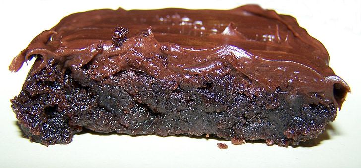

Best Brownies

This is the best frosted brownie recipe I have ever tried, sourced from a personal cookbook from a small time Albertan cook.
Follow the recipe below to try for yourself!
Batter ingredients:
- 1 cup white sugar
- 3/4 cup flour
- 1/8 tsp salt
- 1/4 cup cocoa
- 1/2 cup salted butter
- 2 large eggs
Instructions:
- Preheat oven to 350°
- Melt butter and cocoa in small pot over low heat(~2)
- Whisk sugar, flour and salt together in medium mixing bowl
- Beat eggs until frothy, add to dry mix *do not mix yet*
- Add cocoa/butter mixture and mix all together, do not overmix or brownies will be tough!
- Grease sides and bottom of 8*8 or 9*9 baking dish(pyrex/glass gives best results) add batter and bake at 350° for 30-38 mins until edges start to lift away from pan
- Allow to cool completely before frosting(do not cool in fridge/freezer as it will change texture of brownies)
Frosting ingredients:
- 1 1/3 cups icing sugar
- 1/3 cup cocoa
- 1/4 cup salted butter
- 2 TBSP milk, hot water or coffee
Instructions:
- Fold/cream 1 cup icing sugar into butter, do not use mixer at this point or the icing will break, turn lumpy/grainy or will look curdled. This stop must be done by hand to properly constitute the icing.
- Repeat with remaining icing sugar
- Use electric mixer to mix in 1 Tbsp liquid with cocoa
- Add in 2nd Tbsp liquid slowly while mixing to get desired texture(icing should remain quite thick)
Home